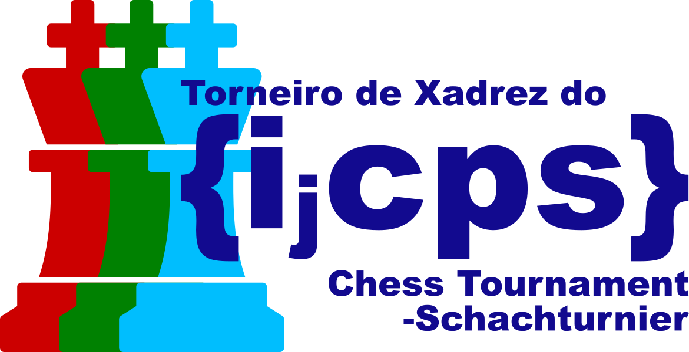

{ijcps} - International Journal Club of Physics Students
Overview
The {ijcps} (International Journal Club of Physics Students) is a monthly journal club/reading group organised by physics students at the following universities:
- Universidade de Lisboa (ULisboa)
- Universität Graz (Uni Graz)
- University College London (UCL)
Each seminar starts at 12:00 UTC on the first Sunday of every month and lasts from 1.5 to 2 hours. The first half-hour usually consists of a paper reading or a student presentation, with the rest being discussions. The seminars are held online over video link.
The {ijcps} is unofficially associated with the International Association of Physics Students (IAPS) as most {ijcps} participants are members of IAPS.
For a list of past {ijcps} seminars, see here.
Chess tournaments

Rarely, when no presenter is available, the {ijcps} organises (often ad hoc) chess tournaments on Lichess.
Participation
If you are a student of physics or a related field and wish to participate individually or organise the participation of your university, please send me an e-mail through the following address:
neil dot booker dot 21 at alumni dot ucl dot ac dot uk